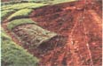
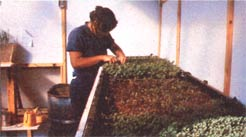

It's early spring . . . and while some parts of the countrystill sleep under a blanket of snow, elsewhere the snowdrops anddaffodils make their welcome appearance, and the sunshine-yellowforsythia brightens wet fternoons. Days lengthen, the airmellows, and green shoots break through the damp soil. Plant a"fingers crossed" crop of smoothseeded peas on St. Patrick's Day. . . and hope for the luck of the Irish!
If this month's Plowboy Interview with John Jeavons (beginningon page 16) has you hankerin' to learn more aboutbiodynamic/French intensive horticultural techniques, you're inluck. MOTHER is offering a series of two-week gardening workshopsthis spring and this summer on her beautiful mountain acreage.Attendance will be strictly limited to six persons per session,so each student will be able to have plenty of hands-onexperience with creating French intensive raised beds, wide-rowrototiller/mulch gardens, and innovative plots for perennialvegetables and herbs. Attendees will also be able to work inMOTHER's solar green houses . . . help design new gardens andlandscaping plans . . . and discuss - with experts -the latest in horticultural techniques. The cost (includingcamping) is $250 per two-week session, and special provisions canbe made for longer-term apprenticeships. (Since attendance is solimited, there are no provisions for families or pets.)
If you'd like to apply, write (including your telephonenumber) to Kerry Sullivan and Barbara Turcotte, THE MOTHER EARTHNEWS(restricted), P.O. Box 70, Hendersonville, North Carolina 28739.Include a brief statement giving your prior gardening experienceand the reasons for your interest in the program. The workshopswill be held April 6-79, April 27 to May 10, May 18-31, June 22to July 5, and July 20 to August 2 . . . and since applicationsfor the first session should be in to Kerry and Barbara by March10, you'll have to hurry!
FROM THE CATALOGS
Seed catalogs continue to appear in MOM's mailbox, and thereare plenty of featured new crop varieties for the innovativegardener to try this season. Two exclusive items in the free 1980listing from Thompson & Morgan (Dept. TMEN, Box 100,Farmingdale, New Jersey 07727) are particularly noteworthy:Blondy, the world's first predominantly female zucchini squash .. . and an exotic Italian broccoli named Romanesco.
Blondy is enormously productive: A heavy concentration offemale blooms (with just enough essential male blossoms to ensurepollination) appears even before the true leaves are fullydeveloped ... and the first golden fruits are ready for harvestin just 45 days. The white heads of Romanesco broccoli resembleclusters of tropical coral . . . and you can get two crops a yearof the creamy buds if you set your first hardy transplants outthree or four weeks before the last frost.
Nichols Garden Nursery (Dept. TMEN, 1190 North PacificHighway, Albany, Oregon 97321) also has a number of newofferings. The disease-resistant Corvallis pea will be a boon fordamp-spring climates where the soil is unworkable until April.Corvallis is highly resistant to enation mosaic virus, andmoderately resistant to pea streak disease. Nichols is alsooffering Tutti Fruitti, a small French everbearing strawberrywith superb flavor and a creeping habit. Northern gardeners willbe thankful for two new melons from Nichols: Earlisweet, athree-pound cantaloupe that's ready for the table in just 68 days. . . and Earli Dew Hybrid, a remarkable honeydew that matures inonly 75 days.
GLEANINGS Southern growers should keeptheir eyes open for the new Park's Sunbelt Gardens catalog. It'sfull of plants that produce particularly well below theMason-Dixon Line . . . . To the list of hydroponic suppliers inP.A. Schippers' article in MOTHER NO. 60 (page 25), add the nameGarden Variety (write Dept. TMEN, 3814 Lyndale Avenue South,Minneapolis, Minnesota 55409). In addition to pipes, pumps, andnutrients, the firm offers - for only $5.95- a do-it-yourself "Rain Garden" hydroponic planter kitthat includes plans, blueprints, and a half-year's supply offertilizer. TESTING, TESTING....
Is plant growth in your garden disappointing ... are youryields off . . . and do pests and diseases wreak havoc with yourcrops? Well, how long has it been since you tested your soil? Asyou may know, nutritional deficiencies can be responsible formany of the most common garden ailments.
Most all county extension services can arrange for soil testsfree or at a nominal charge . . . or, if you'd like theconvenience of instant results, why not run your own tests? Oneof the manufacturers of do-it-yourself soil test kits (SudburyLaboratory, Dept. TMEN, Sudbury, Massachusetts 01776) recentlysent MOTHER a sample . . . and we found it accurate, easy to use,and most helpful in assessing the health of a garden. Smallsamples of earth are treated with four chemical solutions, andthe hues of the resulting mixtures are compared to a series ofcolor charts that come with the kit.
The matching colors indicate the soil's pH . . . and thepercentages of nitrogen, phosphorus, and potash needed to achievefull fertility. In MOTHER'S test case, a long-neglected gardenplot scored a pH of 6 and nutrient needs of 6% (nitrogen), 10%(phosphorus), and 3% (potash). Turning to a provided table offertilizer equivalents (both organic and nonorganic), we werequickly able to determine that 40 pounds of blood meal, 17 poundsof rock phosphate, and 91 pounds of wood ash per 1,000 squarefeet would restore fertility to our soil. The folks at Sudburyrecommend frequent monitoring of soil nutrients . . . and theirkit certainly makes the task easy.
|
You'll get a lot of hands-on experience in our solar greenhouse |
|
 |
|
 |
|
|